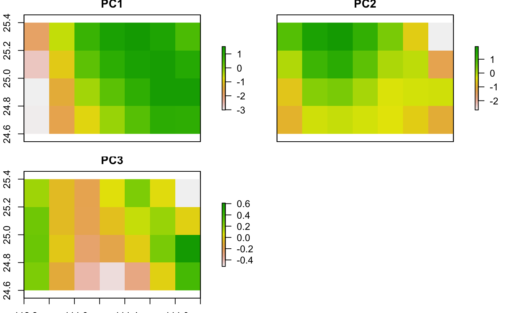

Performs PCA for a stack of raster layers.
spca( layers_stack, layers_to_proj = NULL, pca_obj = NULL, sv_dir = NULL, layers_format = ".asc", sv_proj_dir = NULL )
| layers_stack | A RasterStack of environmental variables |
|---|---|
| layers_to_proj | A RasterStack of the environmental variables that will be projected (default NULL). If provided
the function will project the PCA for those layers by using the PCA object computed for the |
| pca_obj | An object of class |
| sv_dir | A directory where the PCs will be saved. If NULL the PCs will not be written. |
| layers_format | A raster format for writing PCA results (see |
| sv_proj_dir | A directory where the PCs projection will be saved. If NULL the PCs will be written inside sv_dir. |
A list containing either the raster stack with Principal Components of layers_stack or layers_to_proj,
a barplot of the cumulative and explained variance of each compoent of layers_stack and a prcomp object(pca_obj).
spca uses the function prcomp of the stats package. If sv_dir is provided the PCs
and pca_obj will be stored on it. The names of the layers in layers_to_proj need to be named
with exactly the same names of those either inlayers_stack or the pca_obj.
# ------------------------------------------------------------------- # A PCA on layers_stack without saving. layers_stack <- raster::stack(list.files(system.file("extdata", package = "ntbox"), pattern = "M_layers.tif$", full.names = TRUE)) pcs <- spca(layers_stack, sv_dir=NULL,layers_format=NULL) raster::plot(pcs$pc_layers)if (FALSE) { # ------------------------------------------------------------------- # PCA projection without saving. layers_to_proj <- raster::stack(list.files(system.file("extdata", package = "ntbox"), pattern = "G_layers.tif$", full.names = TRUE)) pcs_with_proj <- spca(layers_stack =layers_stack, layers_to_proj = layers_to_proj, pca_obj = NULL, sv_dir=NULL,layers_format=NULL) # Barplot of the Cumulative and explained variance in each component, print(pcs_with_proj$pca_plot) } # ------------------------------------------------------------------- # PCA projection and saving. if (FALSE) { pcs_with_proj_sv <- spca(layers_stack =layers_stack, layers_to_proj = layers_to_proj, pca_obj = NULL, sv_dir=".",layers_format=".asc") } # ------------------------------------------------------------------- # PCA projection, saving and using the pca_obj. if (FALSE) { pca_obj <- base::readRDS(list.files(system.file("extdata", package = "ntbox"), pattern = ".rds$", full.names = TRUE)) pcs_with_proj_sv <- spca(layers_stack =NULL, layers_to_proj = layers_to_proj, pca_obj = pca_obj, sv_dir=".",layers_format=".tif") raster::plot(pcs_with_proj_sv$pcs_layers_projection) }